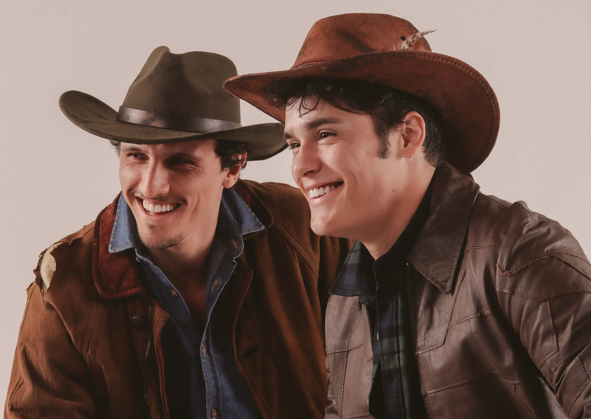

Foto — Terci Melo
Teatro
Clássico “O Segredo de Brokeback Mountain” ganha montagem teatral em São Paulo após sucesso em Londres e no Rio de Janeiro
Após temporadas marcantes em Londres e no Rio de Janeiro, a adaptação teatral de O Segredo de Brokeback Mountain, um dos filmes mais emblemáticos do século XXI,…